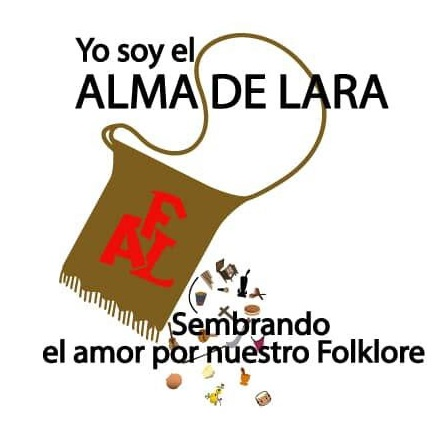

Somos un grupo de danza y música tradicional abierto a cualquier persona que se quiera integrar a ello.
Promover, preservar y difundir el patrimonio cultural y folclórico venezolano, especialmente en el estado Lara, a través de la enseñanza de la danza, la música y las tradiciones, fomentando el sentido de pertenencia y la identidad nacional en las nuevas generaciones.
Ser la fundación cultural y folclórica referente en Venezuela, reconocida a nivel nacional e internacional por la excelencia en la formación artística y la calidad de sus puestas en escena, contribuyendo significativamente a la conservación y evolución de las tradiciones venezolanas.
La Fundación “Alma de Lara” se encuentra ubicado en Lara, Barquisimeto, Municipio Iribarren, Parroquia Concepcion, Carrera 4 Entre 57 y 58.
Momentos y expresiones de nuestra danza, música y cultura en el estado Lara.